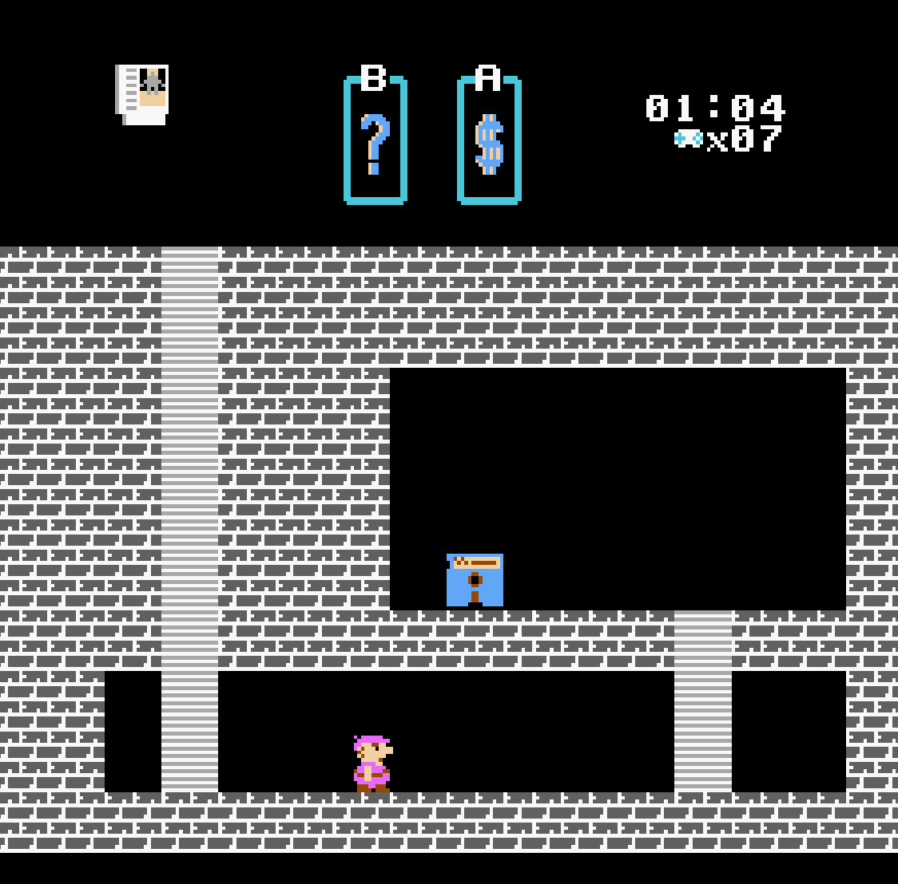
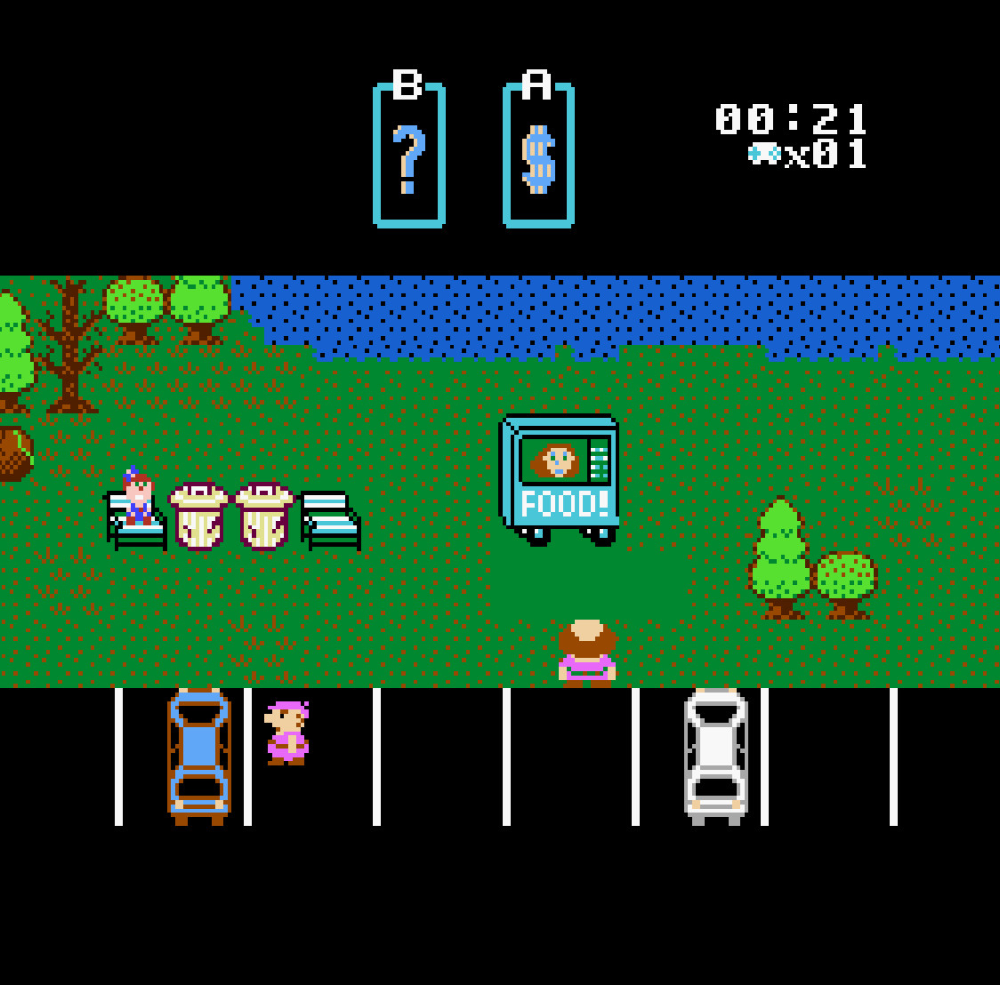
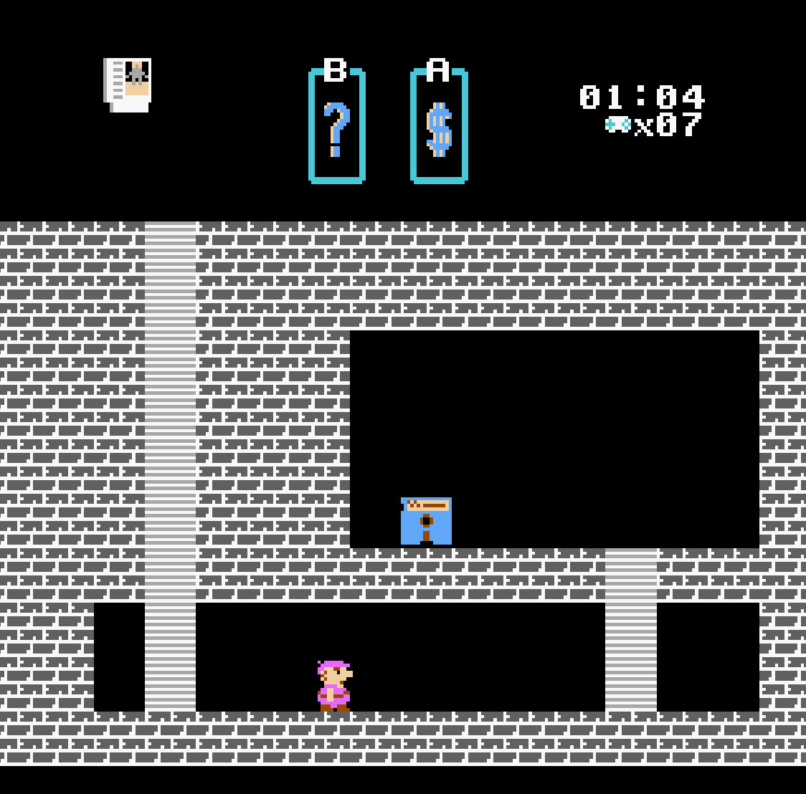
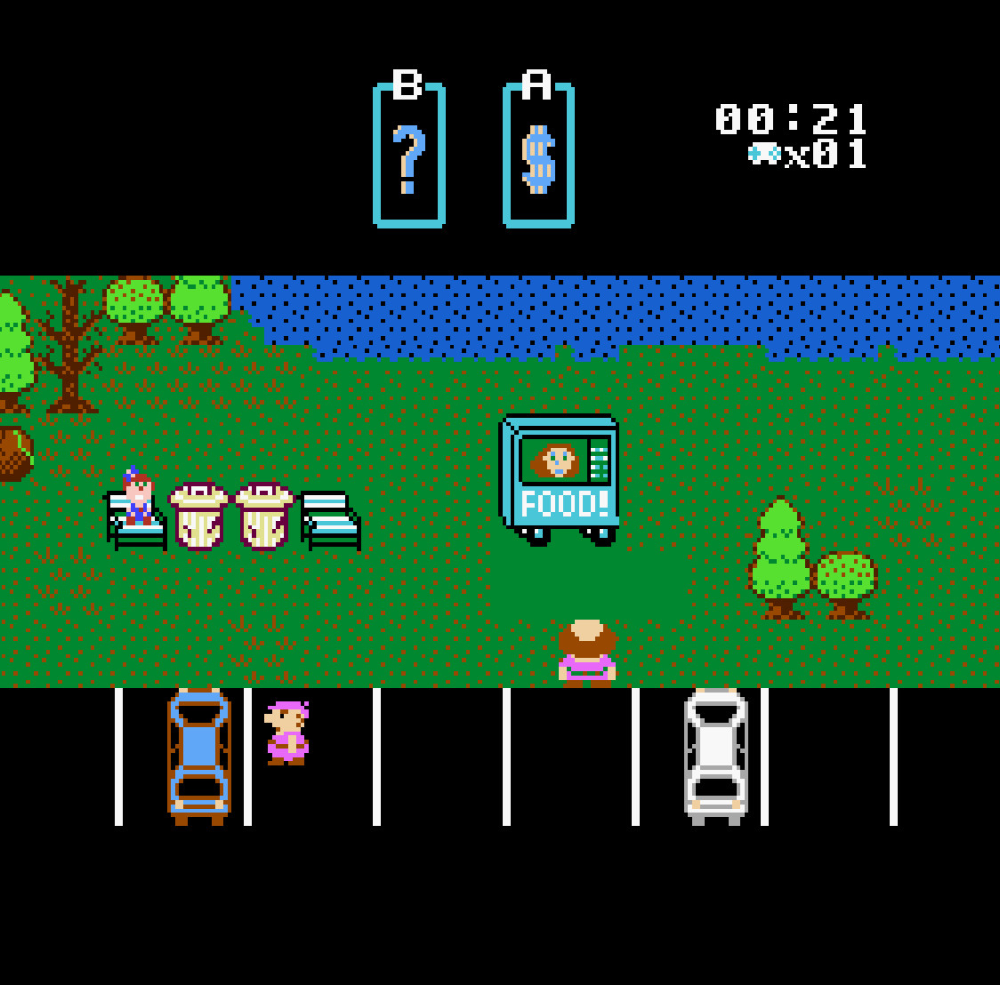
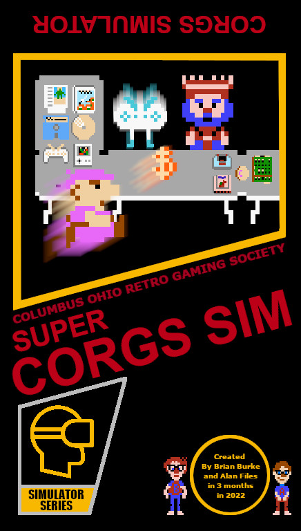
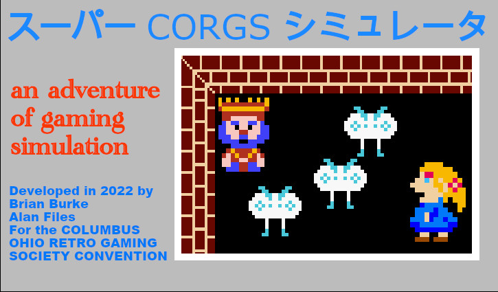

In the year 20XX...
The Columbus Ohio Retro Gaming Society Convention for 2022 has a new entry for the Nintendo Entertainment System (and Famicom).
If you're interested in going to a video game convention, then it only stands to reason that you're even more interested in playing a video game about going to such a convention.
Explore the CORGS-con and find hidden video games and references. Throw money at video games and maybe even find the KING OF VIDEO GAMES himself!
Screenshots
 



Limited Run of Physical Cartridges
Bespoke NES cartridges of a new game for the Nintendo Entertainment System based off the NROM-256 PCB. Rom chips lovingly burned and hand soldered into original hardware.
 Play The Game!
Credits
Created in 3 months in early 2022 by Alan Files and Brian Burke
Graphics by Brian Burke
Programming by Alan Files
Songs:
- Intro - Alan Files
- Level Music - Brian Burke
- In the Hall of the Video Game King - Alan Files
Many thanks to NESDoug https://nesdoug.com/, and Shiru https://shiru.untergrund.net/, for making it easy to write the game in C instead of 6502 Assembly.